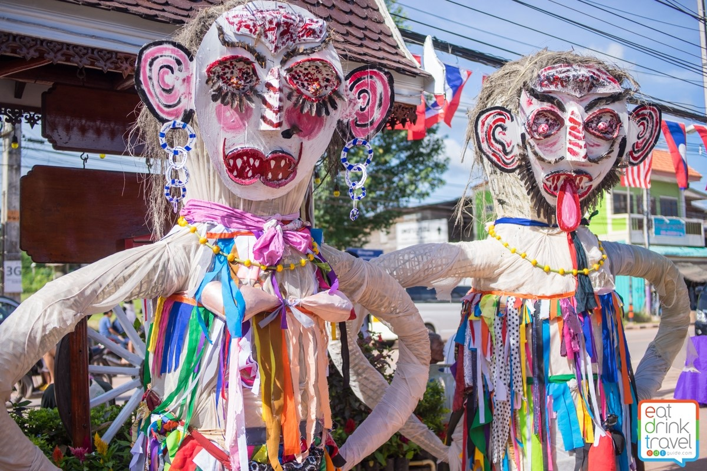
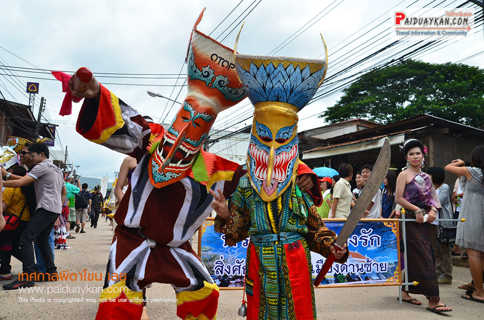

ผีตาโขน
ประวัติความเป็นมาของผีตาโขน
เป็นประเพณีที่จัดขึ้นจังหวัดเลย ไม่มีข้อมูลชัดแจ้งว่ามีมาตั้งแต่เมื่อใด
แต่มีข้อสันนิษฐว่าน่าจะมีตั้งแต่มี บุญหลวง ซึ่งเป็นเวลาหลายร้อยปีมาแล้ว เดิมมีชื่อเรียกว่า ผีตามคน
เป็นเทศกาลที่ได้รับอิทธิพลมาจากนิทานชาดก มหาเวชสันดร ที่กล่าวถึง พระเวชสันดร และ พระนางมัทรี
จะออกเดินทางจากป่าสู่เมืองหลวง
เหล่าบรรดาสัตว์นานาชนิดป่ารวมไปถึงภูตผีปิศาจหลายตนที่อาศัยอยู่ในป่าแห่งนั้น
ได้ตามมาส่งเสด็จด้วยความอาลัย
นิยมจัดงาน 3 วัน
-วันแรก
เป็นวันที่จะร่วมกันสร้างอุปคุตและทำกระทงเล็กไปวางตามทิศต่างๆสี่ทิศบนหอหลวงจะมีร่มขนาดใหญ่กางกั้นไว้
-วันที่สอง เป็นวันทำพิธีอัญเชิญพระอุปคุต
ในวันนี้จะมีขบวนแห่ผีตาโขนและมีการบรรเลงเครื่องดนตรีพื้นเมืองอย่างครื้นเครงซึ่งจะทำพิธีแห่ไปยังวัดเพื่อทำพิธีบายศรีสู่ขวัญ
ระหว่างขบวนแห่ก็จะมีบรรดาผีตาโขนทั้งหลายออกมาร่ายรำ
-วันที่สาม จะเป็นวันที่ชาวบ้านไปทำบุญตักบาตรที่วัด
ร่วมกันฟังเทศน์ ในวันนี้จะไม่มีการละเล่น
ผีตาโขนจะมีอยู่ด้วยกัน 2 ประเภท
ผีตาโขนใหญ่ มีลักษณะเป็นหุ่นที่จำลองขึ้นมาจากโครงไม้ไผ่สาน ห่อด้วยผ้าหรือกระดาษ
ขนาดใหญ่กว่าคนธรรมดาสองเท่าตกตกแต่งไปด้วยวัสดุที่หาได้จากท้องถิ่น
มีการประดับอวัยวะเพศที่บ่งบอกถึงเพศอย่างชัดเจน
ซึ่งเป็นความเชื่อว่าอวัยวะเพศของมนุษย์จะแสดงถึงความอุดมสมสมบูรณ์และประเพณีผีตาโขนในแต่ละปีจะมีการจัดทำผีตาโขนใหญ่เพื่อร่ามขบวนเพียง
1 คู่เท่านั้น
ผู้มีหน้าที่เป็นผีตาโขนใหญ่จะต้องได้รับการอนุญาติจากผีหรือเจ้าก่อนและจะต้องทำติดต่อกันทุกปี

ผีตาโขนเล็ก
คือการละเล่นของชาวบ้าน การแต่งกายก็แต่งเช่นเดียวกับผีตาโขนใหญ่แต่โดยมากจะมีผู้ชาย ไม่ค่อยมีผู้หญิงเข้าร่วมเพราะเป็นละเล่นที่ผาดโผน
